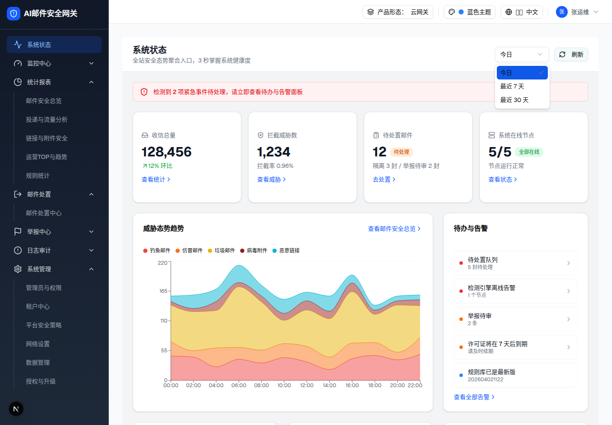
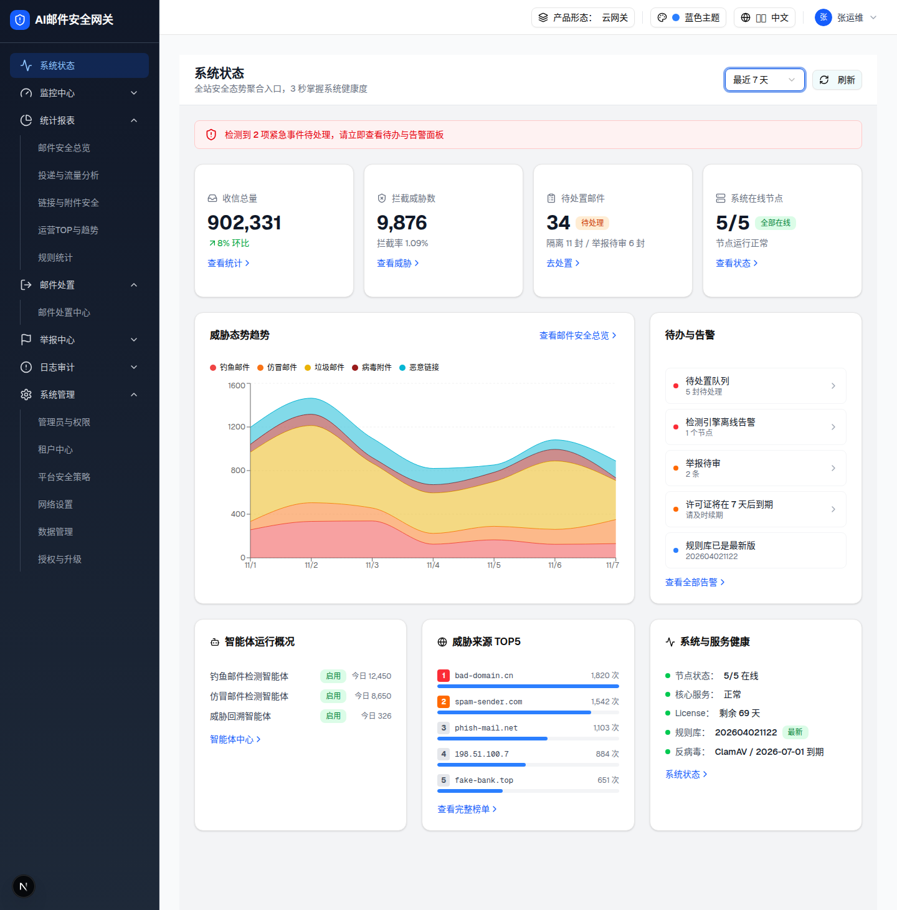
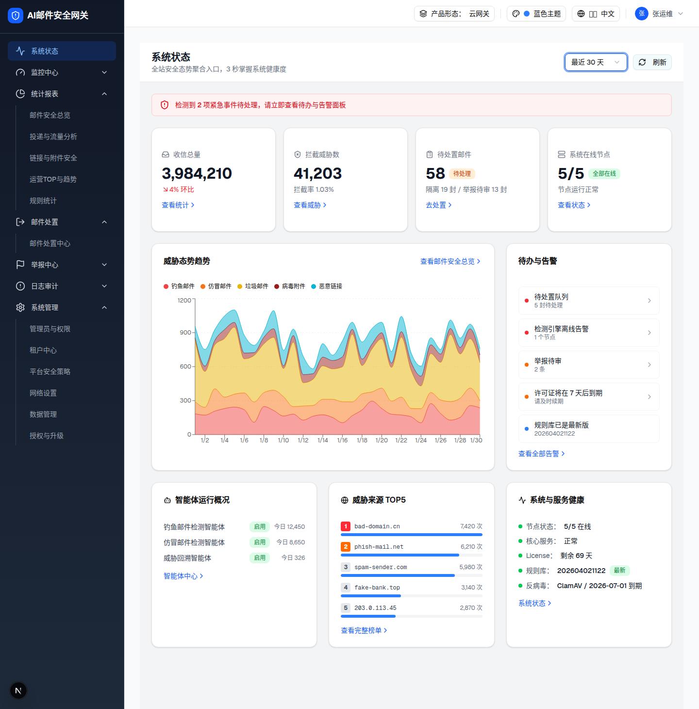

| 所属组件 | 2.1 页面头部（时间范围选择器，shadcn Select / radix） |
| 主文件 | system-status/index.html |
| 触发路径 | 层级0 头部右侧 Select 触发器（初值「今日」）→ click → radix portal 弹出 listbox（data-state=open）→ 选择任一项 → 关闭并全页数据联动 |
| 浏览器验证 | CDP 可信鼠标事件点击触发器与选项；三个范围的 KPI / 趋势 X 轴 / TOP5 数据全部实测 |
预览可操作：上方为 demo 提取的 radix listbox（原为 portal 浮层，此处静态置于文档流展示）。点击任一选项可切换选中态（data-state=checked 高亮 + 右侧 Check 图标迁移），行为与 demo 一致；demo 中选择后 listbox 关闭并驱动全页刷新。

| 元素 | 类型 / 属性 | 规格 |
|---|---|---|
| listbox 容器 | role=listbox data-slot=select-content data-state=open data-side=bottom | bg-popover rounded-md border shadow-md z-50 min-w-[8rem]，入场动画 fade-in + zoom-in-95 + slide-in-from-top-2 |
| 选项 ×3 | role=option（SelectItem） | 今日 / 最近 7 天 / 最近 30 天；py-1.5 pr-8 pl-2 rounded-sm text-sm，focus 态 bg-accent |
| 选中标记 | data-state=checked | 选中项右侧 size-3.5 Check 图标（span absolute right-2） |
| 比对项 | demo 实际 DOM | 提取的 HTML | 一致 |
|---|---|---|---|
| 根节点 | div[role=listbox][data-slot=select-content][data-state=open] | 同左（outerHTML 原样） | ✅ |
| 选项数 | 3 个 [role=option] | 3 | ✅ |
| 选项文案 | 今日 / 最近 7 天 / 最近 30 天 | 一致 | ✅ |
| 选中态 | 「今日」data-state=checked，其余 unchecked | 一致 | ✅ |


| 指标 | 今日 | 最近 7 天 | 最近 30 天 |
|---|---|---|---|
| 触发器文案 | 今日 | 最近 7 天 | 最近 30 天 |
| 收信总量 / 环比 | 128,456 / +12% | 902,331 / +8% | 3,984,210 / -4%（红） |
| 拦截威胁数 / 拦截率 | 1,234 / 0.96% | 9,876 / 1.09% | 41,203 / 1.03% |
| 待处置（隔离/举报） | 12（3/2） | 34（11/6） | 58（19/13） |
| 趋势 X 轴 | 00:00–22:00 ×12（2h） | 11/1–11/7 ×7 | 1/1–1/30 ×30 |
| 健康条 / 节点卡 | 三范围不变（危险态 N=2；节点 5/5） | ||